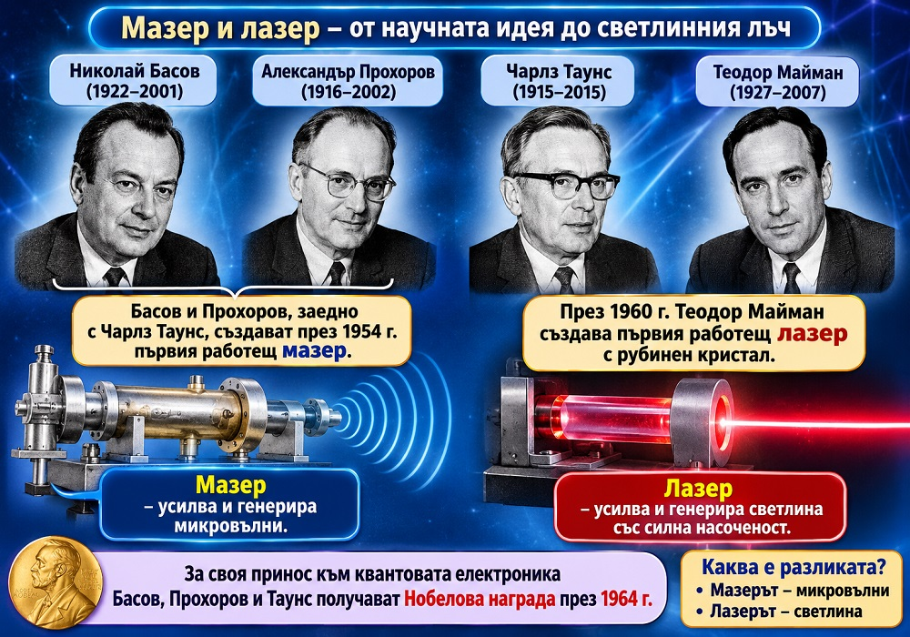
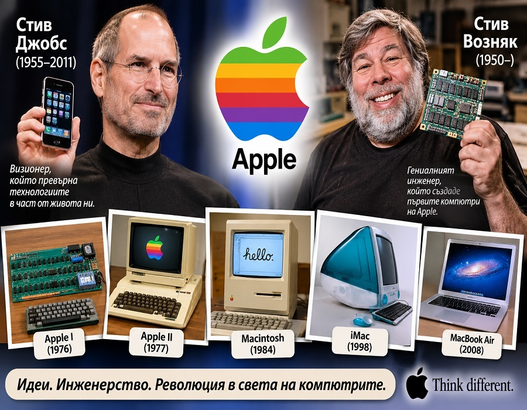
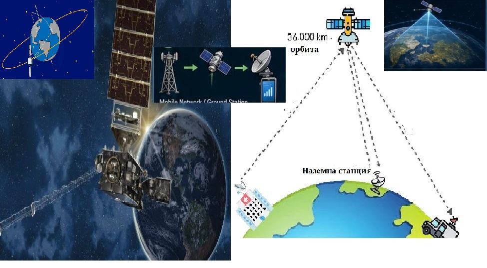
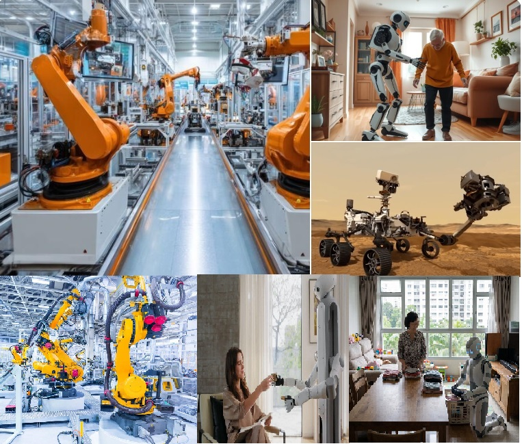
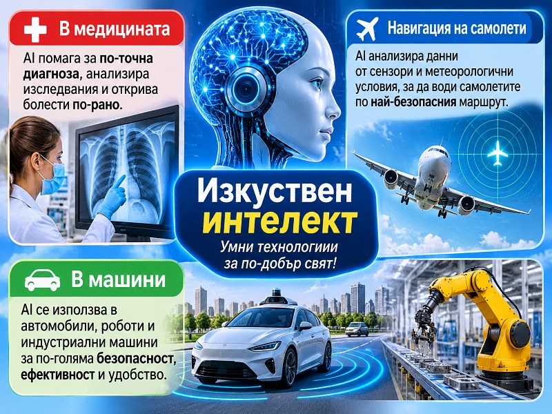

Изобретенията на ХХ и ХХI
Двадесети век – векът на големите открития и изобретения
Двадесети век е време на невероятни промени, които преобразяват живота на хората.
През 1903 г. братята Райт осъществяват първия успешен полет със самолет и поставят началото на съвременната Автомобилът навлиза масово в ежедневието благодарение на Хенри Форд и неговата поточна линия.
Радиото и телевизията позволяват на хората да общуват и да получават информация от далечни места, а в края на века се появяват и мобилните телефони..
Големи постижения има и в медицината. През 1928 г. Александър Флеминг открива пеницилина – първия широко използван антибиотик, който спасява милиони човешки животи. Създадени са ваксини срещу опасни заболявания, а през 1953 г. учените разкриват структурата на ДНК – молекулата, която носи наследствената информация.
.
Истинска революция настъпва и в техниката. През 1947 г. е създаден транзисторът, който поставя основите на съвременната Компютрите се развиват бързо, стават все по-малки и по-мощни.
Появява се и интернет – мрежа, която първоначално служи за научни и военни цели, а по-късно свързва хората по целия свят.
.
Двадесети век превръща света в по-свързано и технологично място и поставя основите на съвременния начин на живот.
.
.
Компютър

В историята на компютрите особено място заемат Джон Атанасов и Клифърд Бери – двама учени, които поставят основите на съвременната компютърна техника.
Джон Атанасов е американски физик и математик с български корени. Баща му е българин, роден в село Бояджик, Ямболско. През 30-те години на XX век Атанасов започва да разработва машина, която да извършва сложни математически изчисления много по-бързо от човека.
В работата му се включва младият инженер Клифърд Бери. Заедно създават компютъра ABC (Atanasoff-Berry Computer), завършен през 1942 г. Той използва електронни лампи, работи с двоична бройна система и може да решава системи от линейни уравнения.
Макар машината да не е била универсален компютър, нейните идеи се превръщат във важна стъпка към създаването на съвременните компютри.
Интересен факт:
Джон Атанасов често е наричан „бащата на компютъра“ заради новаторските си идеи, а неговото българско потекло е повод за особена гордост в България.
.
История на мазера и лазера – от научната идея до светлинния лъч

История на мазера и лазера – от научната идея до светлинния лъчПрез XX век физиката направила огромна крачка напред с откриването на мазера и лазера. В основата на тези изобретения стои явлението принудено излъчване, предсказано още през 1917 г. от великия физик Алберт Айнщайн.
През 50-те години на XX век съветските физици Николай Басов и Александър Прохоров, независимо от американския учен Чарлз Таунс, разработили принципите на мазера. През 1954 г. Таунс и неговите колеги създали първия работещ мазер, който усилвал микровълнови сигнали.
През 1960 г. американският физик Теодор Майман създал първия работещ лазер. Той използвал рубинен кристал, за да произведе тесен, силен и насочен светлинен лъч. Това откритие поставило началото на нова епоха в науката и техниката.
За своя принос към развитието на квантовата електроника Николай Басов, Александър Прохоров и Чарлз Таунс получили Нобелова награда за физика през 1964 г.
Каква е разликата?
- Мазерът усилва и генерира микровълни.
- Лазерът усилва и генерира светлина с определени свойства – тя е силно насочена, интензивна и едноцветна.
Интересен факт:
Днес лазерите се използват в медицината, телекомуникациите, промишлеността, науката, CD и DVD устройствата и много други области.
Важно уточнение:
Басов и Прохоров, заедно с Чарлз Таунс, са носители на Нобелова награда. Теодор Майман остава в историята като създател на първия работещ лазер.
.
Лаптопите и смартфоните

Американски предприемач и визионер, роден в Сан Франциско, САЩ. Още като млад проявява интерес към електрониката и технологиите. През 1976 г. заедно със Стив Возняк и Роналд Уейн основава компанията Apple. Джобс има огромен принос за създаването на персоналните компютри Macintosh, музикалния плейър iPod, смартфона iPhone и таблета iPad. Известен е със своята креативност и стремеж към съвършен дизайн.
Американски инженер, изобретател и компютърен програмист. Още от дете се увлича по електрониката и конструирането на електронни устройства.
Заедно със Стив Джобс създава първите компютри Apple I и Apple II.
Возняк разработва основната електронна част на машините и се превръща в един от пионерите на персоналните компютри.
Интересен факт:
Първият компютър Apple I е представен през 1976 г. и се продава като сглобена електронна платка. Сътрудничеството между Джобс и Возняк поставя началото на една от най-известните технологични компании в света – Apple. През 1984 г. се появява Macintosh на Apple с графичен интерфейс и мишка.
Работата с компютри става много по-лесна.Геостационарните спътници – неподвижните помощници на Земята

Геостационарните спътници са изкуствени спътници, които обикалят около Земята на височина приблизително 35 786 km над екватора. Те се движат със същата ъглова скорост, с която Земята се върти около оста си. Затова изглеждат неподвижни спрямо определена точка от земната повърхност.
Тези спътници имат важно приложение в съвременния живот. Чрез тях се осъществяват телевизионни и радиопредавания, телефонни връзки, интернет комуникации и наблюдение на времето. Метеорологичните спътници например следят движението на облаците и помагат за прогнозирането на бури и урагани.
Благодарение на геостационарните спътници можем да получаваме информация и да общуваме на огромни разстояния.
Интересен факт:
Един геостационарен спътник може да наблюдава почти една трета от земната повърхност!
Роботите

Роботите са едни от най-интересните постижения на науката и техниката. Те са машини, създадени да изпълняват различни задачи автоматично или по команди на човек. Думата „робот“ произлиза от чешката дума robota, която означава принудителен труд.
Първите промишлени роботи се появяват през XX век. Те започват работа във фабриките, където сглобяват автомобили, преместват тежки предмети и извършват повтарящи се операции.
Днес роботите имат широко приложение. Те помагат на лекарите при сложни операции, изследват Космоса, почистват домовете ни и участват в спасителни дейности. Някои дори могат да разговарят, да разпознават предмети и да се учат от опита си благодарение на изкуствения интелект.
Роботите не са просто машини – те са помощници, които променят света и откриват нови възможности пред човечеството!
Изкуственият интелект – технологиите на бъдещето

Изкуственият интелект (ИИ) е технология, която позволява на компютрите и машините да изпълняват задачи, изискващи човешко мислене – да анализират информация, да разпознават образи, да вземат решения и да се учат от опита.
Той намира широко приложение в различни области:
- В медицината – помага на лекарите да откриват заболявания чрез анализ на рентгенови снимки, скенери и други изследвания.
- В авиацията – подпомага навигацията на самолетите, следи полета и помага на пилотите при управлението.
- В машините и роботите – използва се в самоуправляващи се автомобили, промишлени роботи и умни производствени системи.
- В ежедневието – срещаме го в гласовите асистенти, преводачите и интелигентните устройства.Изкуственият интелект прави много дейности по-бързи и по-ефективни. Той е помощник на човека и променя начина, по който живеем и работим.